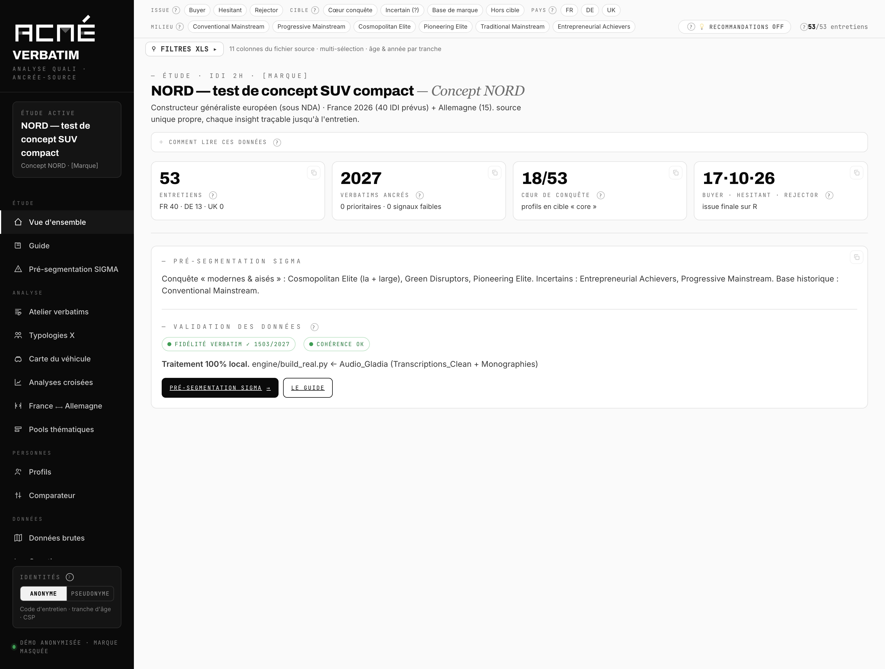

01
La question arrive après
Le designer qui reprend le hayon six semaines plus tard veut savoir ce qu'en disaient les femmes de 35 à 44 ans en cœur de cible. Le rapport dit ce que disait le terrain, pas ce que disait ce sous-groupe-là.
Nous livrons le rapport, et avec lui le corpus qui le fonde — interrogeable par vos équipes, profil par profil, mot par mot, jusqu'au tour de parole exact. Six mois après le terrain, la question qui revient trouve encore sa réponse.
Une étude qualitative coûte cher à produire et se consomme en une heure et demie de restitution. Ce n'est pas le rapport qui manque ensuite. C'est l'accès à ce qu'il y avait derrière.
Le designer qui reprend le hayon six semaines plus tard veut savoir ce qu'en disaient les femmes de 35 à 44 ans en cœur de cible. Le rapport dit ce que disait le terrain, pas ce que disait ce sous-groupe-là.
Une citation en slide 22 arrive sans son contexte : qui parlait, à quel moment du guide, après quelle relance. Deux lectures opposées de la même phrase restent possibles, et se défendent.
Cinquante-trois transcriptions existent. Personne ne rouvre cinquante-trois fichiers Word pour vérifier une intuition un mardi après-midi.
Le marketing, le design, le produit et le juridique n'ont pas les mêmes questions. Ils reviennent l'un après l'autre vers l'équipe d'étude, qui refait le travail à la main.
Nous versons le terrain complet dans une application : transcriptions intégrales, verbatims codés, profils, guide d'entretien, monographies. Chaque élément affiché reste relié à sa source et s'ouvre d'un clic sur le tour de parole d'origine. Rien n'est reformulé en chemin.

assets/shots/vue-ensemble.pngL'état du terrain en un écran : volumétrie, issue des entretiens, pré-segmentation, contrôle de fidélité des verbatims.
Sur ce terrain, 524 citations issues des monographies n'ont pas été retrouvées telles quelles dans la transcription : elles sont signalées comme reformulées plutôt que présentées comme des verbatims. Le contrôle est visible dans l'application.
Elles correspondent à trois moments : juste après le terrain, pendant les arbitrages, et le jour où quelqu'un conteste une conclusion.
La restitution s'adresse à tout le monde et donc à personne en particulier. Ici, chaque bénéficiaire de l'étude filtre le corpus sur ce qui le concerne et lit les retours qui le concernent — sans repasser par l'équipe d'étude.
Un designer ne cherche pas « les résultats ». Il cherche ce que les Cosmopolitan Elite ont dit de l'ouverture du hayon, et il veut les phrases, pas la synthèse des phrases. La carte du produit rattache chaque commentaire à la zone qu'il vise : un clic sur le hayon donne les 107 verbatims qui en parlent, classés par polarité, chacun ouvrant son entretien.

assets/shots/profils-persona.pngLe corpus filtré sur un seul milieu. La carte porte l'issue, le statut de cible et une citation signature qui ouvre le tour de parole exact.

assets/shots/carte-vehicule-zone.pngChaque commentaire est rattaché à la zone qu'il vise. Taille de la pastille : volume. Couleur : polarité nette. Le clic ouvre les verbatims sources.
Une attente exprimée sans son contexte se transforme vite en cahier des charges erroné. « Il faut un grand coffre » ne veut pas dire la même chose chez un couple post-famille en zone rurale et chez un urbain qui se gare en épi.
La recherche accepte des mots-clés et des facettes dans la même requête — coffre rejector, 2G autonomie, femmes signal — et renvoie les passages avec leur profil, leur position dans le guide et leur polarité. L'atelier croise ensuite un mot-clé avec la question du guide et le point de monographie. L'argumentaire qu'on pourra défendre en comité se construit là.

assets/shots/recherche.pngLe moteur traduit la requête en facettes et en mots-clés. Tout se combine en ET, et les filtres du haut s'appliquent aussi.

assets/shots/atelier.pngLe croisement mot-clé × question du guide × point de monographie × profil. Chaque bloc se copie tel quel dans un document de travail.
Le jour où une conclusion est contestée, la seule réponse solide est la source. Le guide d'entretien est présent tel qu'il a été administré : on ouvre une partie et on obtient les passages correspondants dans les 53 entretiens. La question posée reste lisible à côté de la réponse obtenue — c'est souvent là que se joue l'interprétation.
Chaque entretien s'ouvre en entier : transcription intégrale, phases du guide, verbatims codés, monographie. Rien n'est tronqué, et l'on voit ce qui a été retenu comme ce qui ne l'a pas été.

assets/shots/guide.pngLa trame réelle du terrain, séquence par séquence, reliée aux réponses qu'elle a produites.

assets/shots/entretien.pngL'entretien complet, avec ses phases et ses codages. La source, jamais résumée.
Une transcription d'entretien contient un prénom, un métier, une situation familiale, parfois une opinion politique ou un état de santé. C'est un traitement de données personnelles, et la règle appliquée au corpus doit être écrite quelque part. Ici, elle est dans l'application, et elle se change d'un clic.

assets/shots/identite-anonyme.pngPlus aucun prénom : le code d'entretien fait foi. Les identifiants indirects sont généralisés — tranche d'âge au lieu de l'âge, catégorie socio-professionnelle au lieu du métier — et les colonnes nominatives sortent des filtres.

assets/shots/identite-pseudonyme.pngUn prénom fictif, stable d'un bout à l'autre du corpus, remplace le prénom réel. Les attributs détaillés restent lisibles : on suit un individu sans jamais le nommer.
La règle, écrite. Le prénom réel ne figure nulle part dans le fichier livré — il n'est pas masqué à l'affichage, il est absent. La table de correspondance reste chez nous, hors du livrable. Les marques citées dans un test concurrentiel peuvent être masquées de la même façon, y compris à l'intérieur des transcriptions.
Ce que nous ne promettons pas : qu'un corpus pseudonymisé soit anonyme. Il ne l'est pas. Croiser un métier détaillé, un âge exact et une zone d'habitation peut suffire à reconnaître quelqu'un. C'est pour cette raison que le mode anonyme généralise ces trois attributs, et qu'il est le réglage par défaut à la livraison.
La plateforme range et retrouve. Elle ne décide pas. L'interprétation, l'analyse et la recommandation restent le travail de nos consultants seniors — c'est ce que vous achetez, et ce n'est pas délégable à une machine.
Un verbatim porte son identifiant d'entretien, sa position dans le guide et son horodatage. Ce qui ne remonte pas à une source ne s'affiche pas comme un verbatim.
Le milieu proposé par l'analyse automatique s'édite dans l'application, et le recalcul se propage à toutes les vues. La proposition de la machine n'est jamais figée.
Le livrable est un fichier unique qui fonctionne hors connexion. Aucun appel réseau, aucun compte, aucun corpus client versé dans un modèle public.
Les citations non retrouvées mot à mot sont marquées comme reformulées. Les entretiens à faible appariement sont listés. Une donnée absente reste absente, elle n'est pas comblée.
Un seul document HTML d'une douzaine de mégaoctets, qui contient tout et s'ouvre d'un double-clic. Pas d'installation, pas de compte, aucun appel réseau. Il circule par clé chiffrée ou par votre espace interne, et vous restez maître de sa diffusion.
La même application derrière une authentification, pour ouvrir l'accès à plusieurs équipes sans faire circuler de fichier. Les droits se règlent par périmètre : un service peut voir les verbatims sans voir les transcriptions.
Le terrain structuré et documenté, exportable pour alimenter votre propre environnement — une base interrogeable en langage naturel, ou un entrepôt existant. La règle d'anonymisation est appliquée avant l'export.
Où ça se place dans la mission. La plateforme se construit à l'étape d'analyse, à partir des mêmes sources que le rapport. Elle est livrée avec lui, à l'étape de décision. Elle ne remplace ni la restitution ni le rapport : elle prend le relais après, quand les questions arrivent une par une.
Sur une étude ad-hoc de cette taille, il n'y a pas de terrain supplémentaire à financer — le surcoût porte sur la structuration du corpus et le codage, et se chiffre au cadrage.
Nous pouvons partir d'un terrain déjà réalisé pour en faire la démonstration sur vos propres données. Comptez une semaine.